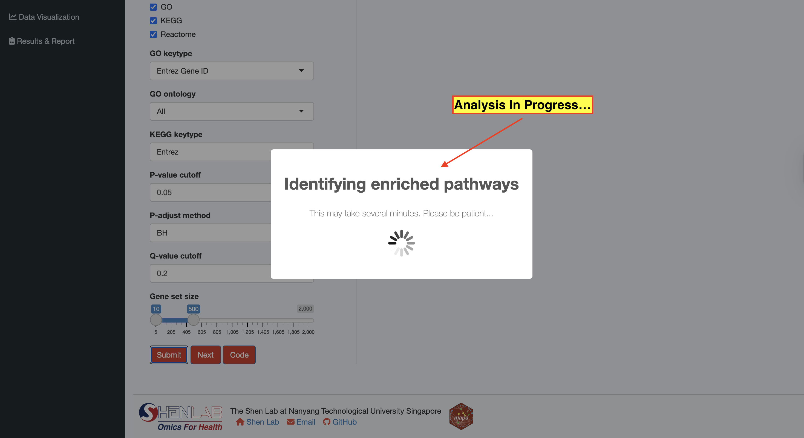
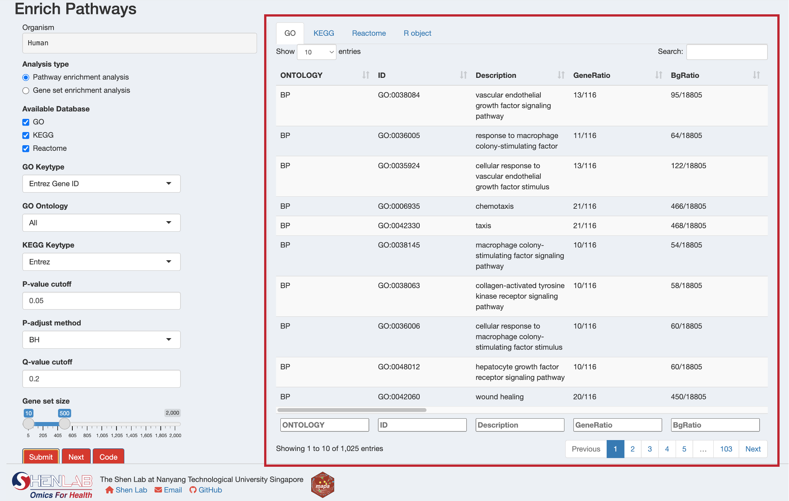
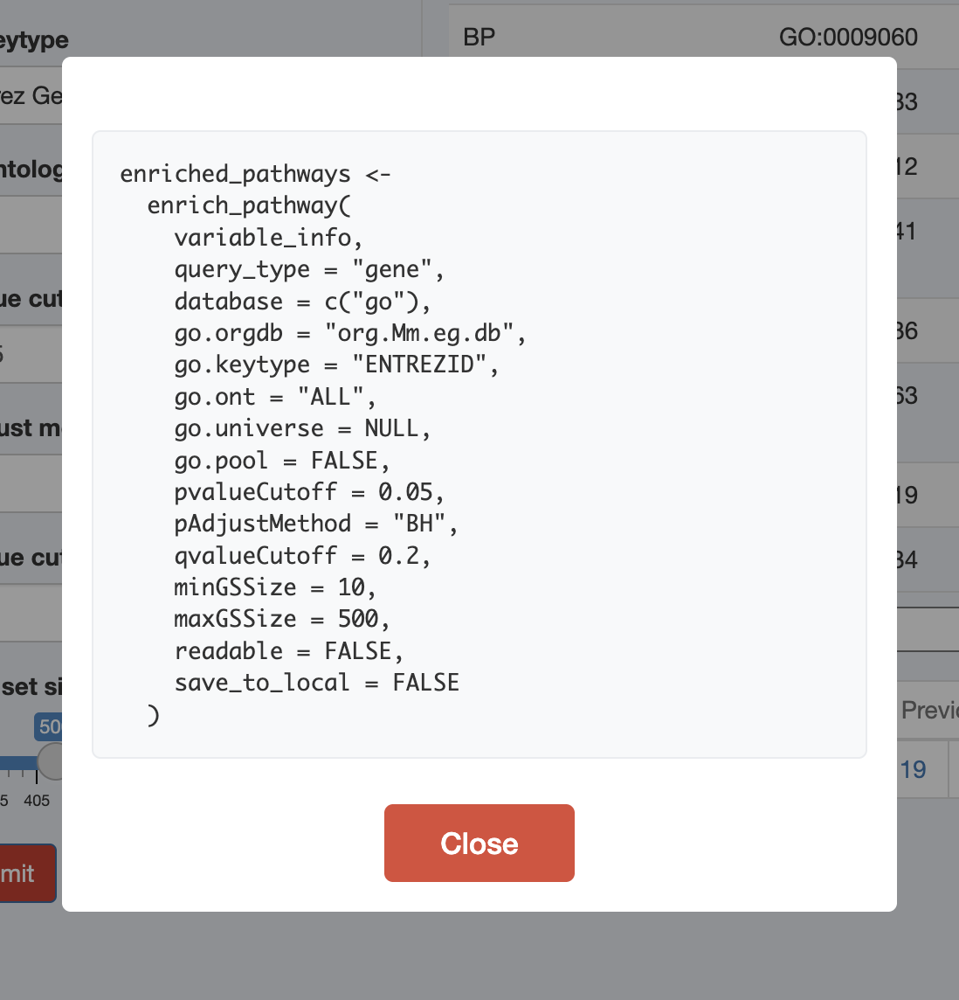

12 Enrichment Analysis
This chapter covers how to perform pathway enrichment analysis using the MAPA Shiny application. The Shiny app provides an intuitive interface for running both Over-Representation Analysis (ORA) and Gene Set Enrichment Analysis (GSEA) for genes, and ORA for metabolites across multiple databases.
Prerequisites: Before running enrichment analysis, ensure you have successfully uploaded and processed your data using the Upload Data interface as described in the previous chapter. The processed data from the ID conversion step will automatically be available for enrichment analysis.
12.1 Supported Databases and Analysis Types
The MAPA Shiny app leverages the powerful enrichment functions from the clusterProfiler package for pathway analysis:
| Database | Supported Organism | Keytype Options | Analysis Types |
|---|---|---|---|
| Gene Ontology (GO) | Any organism with OrgDb object (organism annotation database package from Bioconductor or OrgDb object retrieved from AnnotationHub) | ENTREZID, SYMBOL, ENSEMBL, UNIPROT |
ORA, GSEA |
| KEGG | All KEGG organisms | kegg, ncbi-geneid, ncbi-proteinid, uniprot |
ORA, GSEA |
| Reactome | human, rat, mouse, celegans, yeast, zebrafish, fly, bovine, canine, chicken | ENTREZID only |
ORA, GSEA |
| Database | Supported Organism | Keytype Options | Analysis Types |
|---|---|---|---|
| KEGG | All KEGG organisms | KEGG compound IDs | ORA only |
| SMPDB | Human only | HMDB IDs | ORA only |
For comprehensive understanding of enrichment analysis concepts, methodologies, we highly recommend reading the Biomedical Knowledge Mining using GOSemSim and clusterProfiler book. This book covers all the underlying methods that MAPA uses and will help you make informed decisions about your analysis parameters.
12.2 Gene-based Enrichment Analysis
12.2.1 Step 1: Select Analysis Type
The app automatically detects your data type (whether “gene” or “metabolite”) from the previous step. For gene data, choose between:
- Pathway enrichment analysis (ORA): Tests for over-representation of your genes in predefined pathways
- Gene set enrichment analysis (GSEA): Analyzes the entire ranked gene list to identify enriched pathways
GSEA Requirements: If you select GSEA, an additional “Order by” field will appear. This should correspond to a numeric column in your data (like fold change or p-values) that will be used to rank genes.
12.2.2 Step 2: Configure Database Parameters
The app automatically detects available databases based on your organism and displays relevant parameter options:
When GO is selected, configure:
- GO Keytype: Choose the identifier type for GO analysis
ENTREZID: Entrez Gene IDsSYMBOL: Gene symbolsENSEMBL: Ensembl gene IDsUNIPROT: UniProt IDs
- GO Ontology: Select which Gene Ontology aspects to analyze
ALL: All three ontologies (recommended)BP: Biological Process onlyCC: Cellular Component onlyMF: Molecular Function only
When KEGG is selected, configure:
- KEGG Keytype: Choose the identifier type for KEGG analysis
kegg: KEGG gene IDs (recommended)ncbi-geneid: NCBI Gene IDsncbi-proteinid: NCBI Protein IDsuniprot: UniProt IDs

Reactome analysis uses ENTREZID only and requires no additional configuration.
12.2.3 Step 3: Set Statistical Parameters
Configure the statistical thresholds for your analysis:
- P-value cutoff: Significance threshold for raw p-values (default: 0.05)
- P-adjust method: Multiple testing correction method (default: BH - Benjamini-Hochberg)
- Q-value cutoff: False Discovery Rate threshold (default: 0.2)
- Gene set size: Minimum and maximum pathway sizes to consider (default: 10-500)
12.3 Metabolite-based Enrichment Analysis
For metabolite data, the interface automatically switches to metabolite-specific options and shows available databases based on your organism:
- Human: Both HMDB and KEGG databases available
- Other organisms: Only KEGG database available

12.3.1 Step 1: Submit Analysis
- Review your parameter selections
- Click the “Submit” button to start the enrichment analysis
- A progress indicator will show the analysis is running
- Success or error messages will appear as notifications

Processing Time: Metabolite enrichment analysis may take several minutes to complete. Please wait patiently while the analysis runs.
12.3.2 Step 2: Review Results
After successful completion, results will appear in the right panel with separate tabs for each database:
For gene enrichment analysis, you’ll see tabs for:
- GO: Gene Ontology enrichment results
- KEGG: KEGG pathway enrichment results
- Reactome: Reactome pathway enrichment results
- R object: Summary of the complete results object

For metabolite enrichment analysis, you’ll see tabs for:
- KEGG Metabolite: KEGG metabolic pathway results
- HMDB: Small Molecule Pathway Database pathway results (human only)
- R object: Summary of the complete results object
12.4 Downloading Results
Each results tab includes a “Download” button to save results as CSV files:
- Navigate to the desired results tab
- Click “Download” to save the table
- The “R object” tab allows downloading the complete results object for further analysis in R
12.5 Understanding the Results
Key columns in enrichment results:
Core Information:
ID: Pathway identifier (e.g., GO:0042060 for GO, hsa04060 for KEGG, R-HSA-5669034 for Reactome)Description: Pathway nameONTOLOGY: Biological ontology (for GO only: MF=molecular function, CC=cellular component, BP=biological process)category/subcategory: KEGG pathway categories (for KEGG only)
Statistical Measures:
pvalue: Raw p-value from hypergeometric test (equivalent to one-sided Fisher’s exact test)p_adjust: Adjusted p-value after multiple testing correction (BH method by default)qvalue: Q-value for FDR control. For more information, see?qvalue::qvalue
Gene Mapping:
GeneRatio: Ratio of input genes annotated to this pathway (format: “genes_in_pathway/total_input_genes”)BgRatio: Ratio of all genes annotated to this pathway in the background universe (format: “pathway_genes/universe_genes”)Count: Total number of genes from input list that match this pathwaygeneID: Gene IDs that overlap between your gene list and the pathway (separated by “/”)
Enrichment Metrics:
RichFactor: Ratio of input genes annotated to a pathway vs. all genes annotated to this pathwayFoldEnrichment: Enrichment fold change (GeneRatio divided by BgRatio)zScore: Standard deviations away from expected overlap (How unusual or extreme the observed enrichment is compared to what you’d expect by chance. Higher absolute z-score means more “surprising” or significant enrichment.)
For GSEA results, additional columns specific to ranked list analysis include:
setSize: Total number of genes in the gene set/pathwayenrichmentScore: Degree of overrepresentation at top/bottom of ranked listNES: Normalized Enrichment Score - main metric for interpretation- Positive NES: pathway enriched in upregulated genes (pathway activation)
- Negative NES: pathway enriched in downregulated genes (pathway suppression)
rank: Position in ranked list where maximum enrichment score occurredleading_edge: Statistics for the leading-edge subset of genescore_enrichment: Core enriched genes that contribute most to the enrichment signalCount: Number of core enriched genes
For metabolite ORA results, the result structure differs from gene-based analysis:
Pathway Information:
pathway_id: KEGG pathway ID or Small Molecule Pathway Database pathway ID (e.g., SMP0000028)pathway_name: Name of the metabolic pathway (e.g., “Caffeine Metabolism”)describtion: Detailed description of the pathway from the corresponding databasepathway_class: Classification of pathway (e.g., “Metabolic;primary_pathway”, “Disease;primary_pathway”)
Statistical Measures:
p_value: Raw p-value from enrichment testp_adjust: Adjusted p-value for multiple testing correction
Metabolite Mapping:
all_id: All metabolite IDs in this pathway (separated by “;”)all_number: Total number of metabolites in the pathwaymapped_id: Your input metabolite IDs that map to this pathway (separated by “;”)mapped_number: Number of your metabolites that map to this pathwaymapped_percentage: Percentage of pathway metabolites covered by your input data
12.6 Viewing the Analysis Code
Click the “Code” button to see the exact R code that replicates your analysis: This code can be copied and used in your own R scripts for reproducible analysis.

12.7 Next Steps
Once your enrichment analysis is complete:
Review Results: Examine the significance and biological relevance of enriched pathways
Download Data: Save results (especially R Object from R Object tab) for further analysis
Proceed to Clustering: Click the “Next” button to move to pathway clustering analysis. Based on your data type and analysis goals, you can proceed to:
- SimCluster Method: Traditional similarity-based clustering (Step 1: Merge Pathways)
- EmbedCluster Method: Advanced biotext embedding-based clustering
For metabolite analyses in non-human organisms, the app will automatically direct you to the EmbedCluster method, as it’s more suitable for single-database analyses.